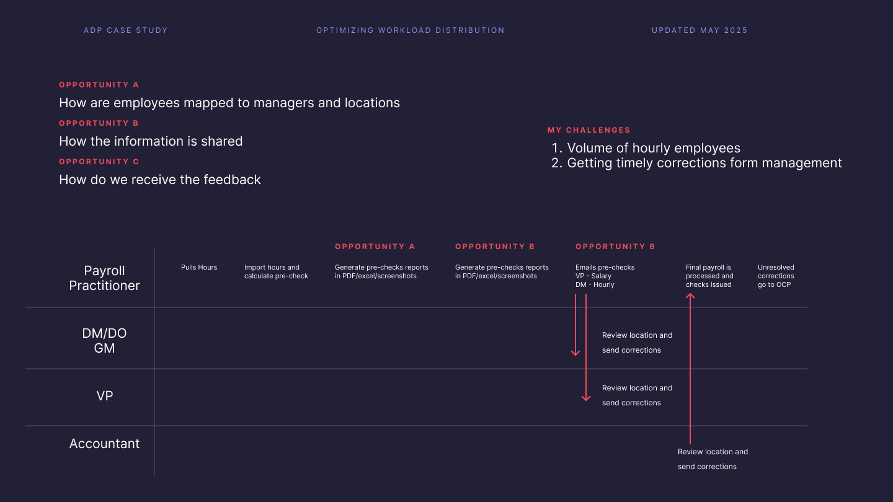

Termination wokrflow redesign / Final Payment
Users struggled with the termination process, especially around final payments. The interface caused confusion, next steps were unclear, and visibility into payment triggers was limited.
Process
-
Research & discovery: Conducted interviews to identify decision points and risk areas.
-
Design & prototype: Collaborated with product, engineering, and compliance to address a critical client requirement—securing their commitment.
The Challenge
- Lack of prioritization: Termination notifications from CoreHR lack key associate details and are not prominent in the payroll dashboard, leading to delayed or missed actions.
- Manual effort and inefficiencies: Payroll practitioners must manually create OCP entries and input data for each associate, resulting in excessive clicks and longer processing time.
- Unmet functional requirements: The system does not support bulk termination, posing major challenges for large clients such as Boot Barn.
Approach
- Improved notification management: Add termination alerts to the “Things to Do” list and payroll tasks for better visibility, with safeguards to prevent duplicate processing.
- Automated OCP creation: Generate preliminary OCPs automatically from CoreHR terminations, prefilled with pay details and flexible payment options, including same-day ACH where required.
- Bulk termination support: Enable OCP to handle multiple associates at once, improving efficiency for large clients.

Prioritization Matrix
Impact
Launched as ADP’s Manager Review & Approve Payroll feature. The solution proved successful enough for ADP to commercialize it as a premium offering.